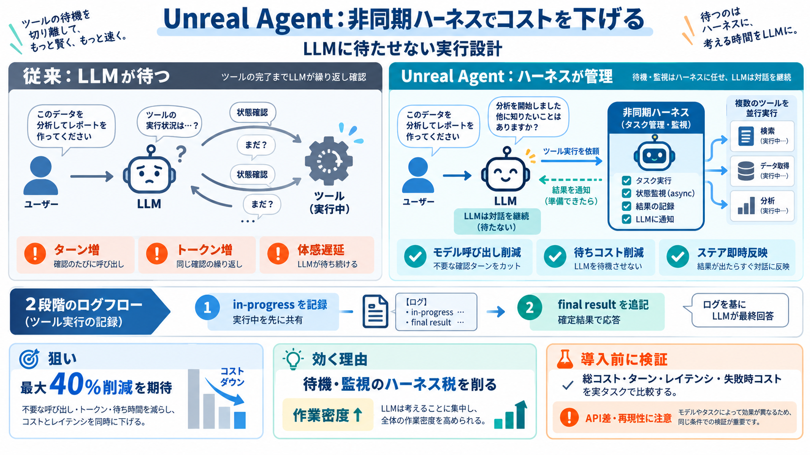

The Architecture of Unreal Engine 6 | State of Unreal 2026
[8:31] months following the early access release. And we expect just about everyone should be able to move their project…

読みどころ：待たない実行
LLMの“ツール呼び出し運用”をハーネス側で非同期化し、エージェント実行のコストと遅延を下げる仕組みがUnreal Labsの提案です。最大40%削減を狙う、という主張が中心にあります。（非同期：async / 非同期実行）
課題：コストが膨らむ
エージェント運用では、ツール呼び出しに関連するトークン消費や、完了待ちのポーリングが“モデルターンの増加”につながりやすく、コストと体感遅延を押し上げます。（ポーリング：polling / 状態確認の繰り返し）
核心：非同期化
Unreal Agentは、ツールの進行管理（待ち・監視・完了確認）をハーネス側でバックグラウンド処理に寄せます。その結果、LLMは“完了待ち”でターンを消費しにくくなります。（ハーネス：harness / 運用枠組み）
設計：二段階ログ
ツール呼び出し直後に“in-progressイベント”、完了後に“最終結果”をログへ追記し、そのタイミングでLLMを呼ぶパターンが示されています。単なる実装詳細ではなく、会話整合性や再現性にも影響し得る点が重要です。（キャッシュ：cache / 繰り返し計算回避）
説明：コストの内訳
コスト削減は、モデルターン/トークンの削減と、1ターン当たりのツール作業量（有益な作業の割り込み増）で説明されます。つまり“待ちコスト”を消して“作業密度”を上げる狙いです。（密度：density / 1回あたりの成果）
根拠：実課題
Terminal-Bench 4.0、SWE-Atlas Codebase QnA、DeepSWE 1.1、ALE-CLI などで、CodexやPiと比べてコストが低い傾向が示されています。（合否率が同水準の場合があり＝“安くても十分”の可能性）
確認：精度は？
ベンチマークでは正答率（パス率など）が概ね同水準で、主に“総コスト”の優位が中心です。とはいえ、統計ばらつきや比較条件は読み手側で慎重に解釈する必要があります。（marginal differences：差が僅差の可能性）
体験：ステア反映
ツールが動いている最中でも、ユーザーからのステア（追加指示）をツール完了待ちなしで即時反映しやすくなる、と説明されています。さらに、モデル呼び出しの間に“より多くの有益なツール作業”を割り込ませられるのも利点です。（ステア：steer / 追加指示）
現実：移植性の壁
in-progress と最終結果の扱いは工学的に難しく、Responses APIのstatusフィールド等がプロバイダで期待通り機能しない場合や、モデルがrejectする場合が言及されています。つまり、設計が“完全に一般化”されたわけではなく、堅牢性の検証余地が残ります。（reject：拒否 / リクエスト不適合）
読み替え：どう動く？
ハーネスがツール実行を管理し、LLMにはログ（in-progress→最終結果）を根拠に“必要なタイミングだけ”呼び出しを行う流れが狙いです。これで待機がモデル側に波及しにくくなります。（フロー：flow / 処理手順）
差分：何が効く？
Unreal Agentの見どころは、ツール管理の“LLMによる運用コスト”を減らす点です。非同期化と二段階ログにより、ユーザー指示の反映遅延や、無駄な状態追跡が起きにくい設計だと整理できます。（税：tax / 余計なコスト）
結論：導入は検証から
Unreal Agentは、非同期ハーネスと二段階ログで“待機・監視の運用負担”を減らし、コスト優位を狙う提案です。一方で、比較条件の明確化やAPI/プロバイダ依存の挙動差が残るため、導入前にツール構成・並列度・レイテンシ/失敗時コストまで小規模検証するのが安全です。（小規模検証：pilot / PoC）
[8:31] months following the early access release. And we expect just about everyone should be able to move their project…
+ Tool‑loop protection with a maximum tool‑call iteration count. + Tool result size limits to avoid blowing up context…
### Financial Statement Summary | Metrics | FY 2023-24 | --- | | Income Statement | | | Revenue | 8667 | | EBITDA | 3…
Each Skill is a standalone SKILL.md file that the Agent reads on demand when receiving a task. Skills naturally chain th…
friction and enabling you to build faster and iterate more. This includes providing capabilities for writing and compili…